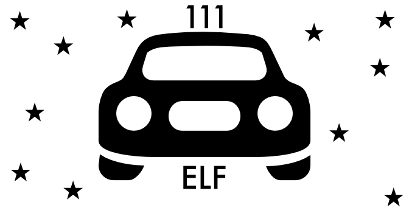

Und noch ein Blogartikel
Und hier folgt bald noch ein Blogartikel
Warum diese Seite?
Als Softwaretester programmiere ich beruflich hauptsächlich automatisierte Tests. Dabei fehlt mir das Gefühl, selbst etwas zu "erschaffen". Ich möchte diese Seite nutzen, um selbst ein kleines Webprojekt aufzubauen, weiterzuentwicklen und zu pflegen.